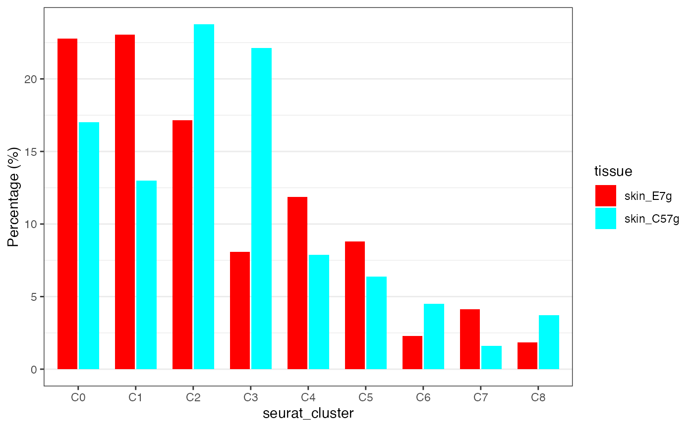

Introduction to czplots
Chenhao Zhou
2025-09-01
Introduction-to-czplots.RmdWelcome to czplots! This R package provides functions
for fast and intuitive analysis of scRNA-seq data. Here, we will go
through a quick tutorial on how to use these functions.
To get started, this package incudes a trimmed test dataset of 2,000 mouse skin T cells derived from Zhou et al 2021. we will use this test dataset to demonstate key functions within this package.
library(czplots)
library(Seurat)
#load test dataset
data(skin_tcell)
skin_tcell@meta.data[1:2,]
# orig.ident nCount_RNA nFeature_RNA tissue percent.mt integrated_snn_res.0.5 seurat_clusters TCR
#skin_E7g_AAAGCAACACCAGGTC gex_5prime 2690 1114 skin_E7g 1.784387 0 0 TCR+
#skin_E7g_AAAGCAATCAAAGACA gex_5prime 1921 752 skin_E7g 2.134305 0 0 TCR+First, let’s take a look at the dataset. It includes 9 skin T cell clusters (C0–C8) derived from two mouse groups: K14E7 transgenic mice and wildtype C57BL/6 mice.
cell type composition analysis
A common starting point in most analyses is identifying which cell types are enriched in each group, condition, or disease. This package provides a fast and convenient way to calculate the proportion of each cluster within each group and visualize the differences using a bar chart. To use this function, the user must specify two arguments: group and level. Examples are provided below.”
countpercluster(skin_tcell,group="tissue",level<-c("skin_E7g","skin_C57g"))
#> skin_E7g skin_C57g skin_E7g_percent skin_C57g_percent
#> C0 259 147 22.78 17.03
#> C1 262 112 23.04 12.98
#> C2 195 205 17.15 23.75
#> C3 92 191 8.09 22.13
#> C4 135 68 11.87 7.88
#> C5 100 55 8.80 6.37
#> C6 26 39 2.29 4.52
#> C7 47 14 4.13 1.62
#> C8 21 32 1.85 3.71
#> total 1137 863 100.00 100.00Annotation
The html_vignette template includes a basic CSS theme.
To override this theme you can specify your own CSS in the document
metadata as follows:
output:
rmarkdown::html_vignette:
css: mystyles.cssFigures
The figure sizes have been customised so that you can easily put two images side-by-side.
You can enable figure captions by fig_caption: yes in
YAML:
output:
rmarkdown::html_vignette:
fig_caption: yesThen you can use the chunk option
fig.cap = "Your figure caption." in
knitr.
More Examples
You can write math expressions, e.g. \(Y =
X\beta + \epsilon\), footnotes1, and tables, e.g. using
knitr::kable().
| mpg | cyl | disp | hp | drat | wt | qsec | vs | am | gear | carb | |
|---|---|---|---|---|---|---|---|---|---|---|---|
| Mazda RX4 | 21.0 | 6 | 160.0 | 110 | 3.90 | 2.620 | 16.46 | 0 | 1 | 4 | 4 |
| Mazda RX4 Wag | 21.0 | 6 | 160.0 | 110 | 3.90 | 2.875 | 17.02 | 0 | 1 | 4 | 4 |
| Datsun 710 | 22.8 | 4 | 108.0 | 93 | 3.85 | 2.320 | 18.61 | 1 | 1 | 4 | 1 |
| Hornet 4 Drive | 21.4 | 6 | 258.0 | 110 | 3.08 | 3.215 | 19.44 | 1 | 0 | 3 | 1 |
| Hornet Sportabout | 18.7 | 8 | 360.0 | 175 | 3.15 | 3.440 | 17.02 | 0 | 0 | 3 | 2 |
| Valiant | 18.1 | 6 | 225.0 | 105 | 2.76 | 3.460 | 20.22 | 1 | 0 | 3 | 1 |
| Duster 360 | 14.3 | 8 | 360.0 | 245 | 3.21 | 3.570 | 15.84 | 0 | 0 | 3 | 4 |
| Merc 240D | 24.4 | 4 | 146.7 | 62 | 3.69 | 3.190 | 20.00 | 1 | 0 | 4 | 2 |
| Merc 230 | 22.8 | 4 | 140.8 | 95 | 3.92 | 3.150 | 22.90 | 1 | 0 | 4 | 2 |
| Merc 280 | 19.2 | 6 | 167.6 | 123 | 3.92 | 3.440 | 18.30 | 1 | 0 | 4 | 4 |
Also a quote using >:
“He who gives up [code] safety for [code] speed deserves neither.” (via)